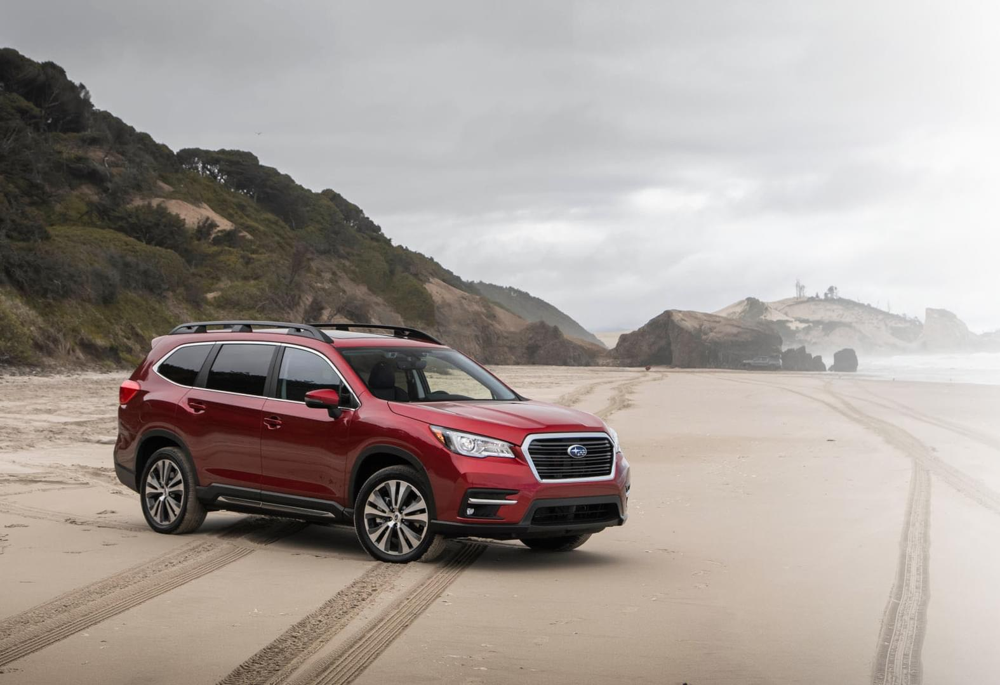
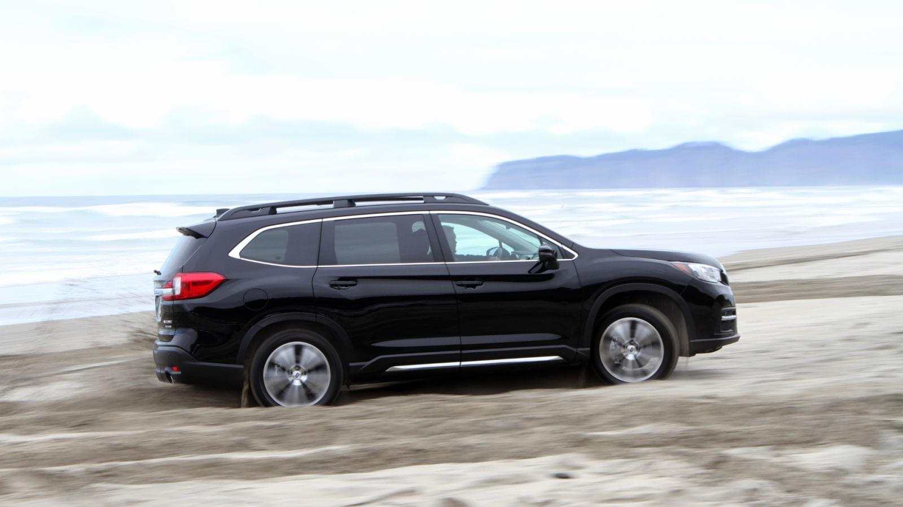

Subaru Ascent 2019 года - это трехрядный внедорожник, который на самом деле ощущается как Subaru



Хотя продажи Subaru в последние годы не остановить, даже несмотря на то, что они по- прежнему доставляют нам удовольствие и доставляют удовольствие от вождения, есть один прибыльный сегмент, который ей еще предстоит завоевать - большой трехрядный кроссовер. Subaru Ascent 2019 года стремится изменить это, и в отличие от паршивой овцы Tribeca, он на самом деле выглядит и ощущается как Subaru. И я рад сообщить, что он управляется намного лучше, чем все, что на самом деле предназначено для перевозки семи или восьми человек.